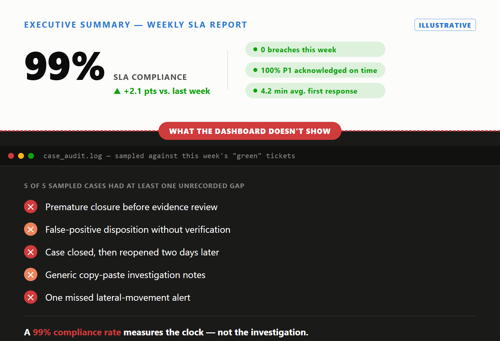

An SLA holds a SOC accountable to a customer, not analysts judged every shift. Once those collapse into one figure, it stops measuring what it was built to measure — not from dishonesty, but because that's what happens to any measure turned into a target.
This isn't SOC-specific. Charles Goodhart described it in 1975: a targeted statistic gets managed to, not tracked — Goodhart's Law. Donald T. Campbell said the same a year later, as Campbell's Law: the more an indicator drives decisions, the more it invites corruption that distorts what it monitors. Neither implies bad faith; the analyst is responding to the SOC's own incentive.
Case Study 10 is this pattern taken to its conclusion: a case closed on a one-line note nobody followed up on, timed just ahead of breach. The list below generalizes it — moves any rational analyst makes once the dashboard, not the incident, decides how their shift is judged.
| Gaming behavior | On the floor | Optimizes for |
|---|---|---|
| Blanket acknowledgment | Alert acked unread | Stops clock, no triage |
| Closing early | Resolved on thin evidence | Elapsed time, not resolution |
| "Awaiting customer," no contact | Paused, no message sent | Unearned stop-clock, unlike Case 03 |
| Severity downgrade | Cut pre-breach, no evidence | Looser clock, not truer risk |
| Fresh case, not the hot one | Old ticket left to lapse | Clean clock, lost continuity (Case 05) |
| Copy/paste notes | Only the ticket number changes | Looks like investigation, isn't |
| Reflexive escalation | Pushed up fast, unread | Transfers clock, not understanding |
| Managing the dashboard | Watching board, not queue | Reported number, not real risk |
| Ticket splitting / incident fragmentation | One long incident cut into parallel tickets | Each fragment's clock in-window, not total duration |
| Clock restart via repeated reclassification | Reclassified again each time breach nears | Fresh clock, not a fresh case |
| Denominator gaming | Exclusions widened, thresholds raised, quietly | Compliance %, not faster cases |
| Type reclassification | Retyped as service request, not incident | Exits the SLA population, not just its clock |
Individually, several of these look like ordinary triage. Only a timestamped, evidence-linked record, per Sections 2 and 5, separates a gamed decision from a legitimate one.
This isn't an outside objection — NIST SP 800-61 Rev. 2 (since superseded by Rev. 3) warned against using incident metrics to judge individual analysts, since that discourages honest reporting. NIST still backs SOC-wide metrics for trend visibility; the caution is only against pointing one at an individual.

A response-time number that becomes a performance target gets optimized instead of the incident — Goodhart's Law doesn't ask permission.
That's uncomfortable, not an argument for abandoning SLA measurement — elapsed-time tracking still gives customers an auditable basis for accountability and leadership visibility no manager could hold in their head. Being gameable doesn't erase that value; it just means the number alone can't prove the work was good. Section 8 pairs the clock with quality signals that measure what it can't see.